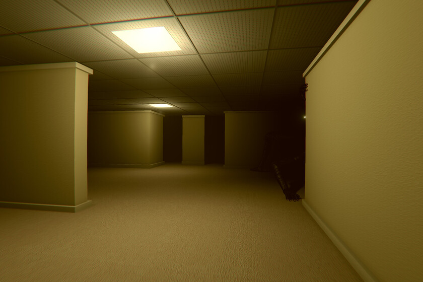
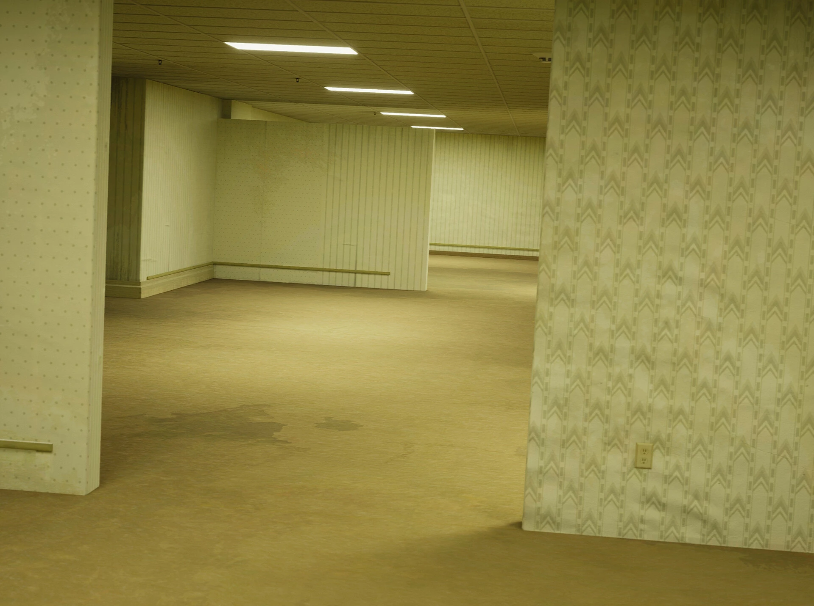
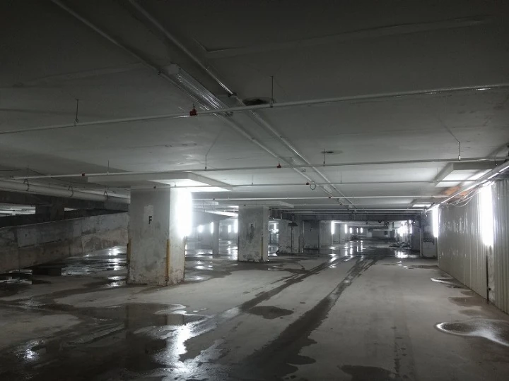

Los backrooms son la nueva leyenda urbana que triunfa y se esparce rápidamente por Internet, en foros, plataformas de entretenimiento y redes sociales. Se trata de la historia de un laberinto interminable con apariencia de oficinas vacías, que se supone que se encuentra «por detrás» de los espacios de la realidad. Un lugar al que se accede sólo por accidente, como una especie de backstage, en el que sería una pesadilla perderse.
Según el creepypasta, los backrooms son la «parte de atrás» de nuestra realidad. Un submundo que existe de forma paralela al conocido, como si en él estuviesen creando o preparando todo lo que sucede de este lado.
Se caracterizan por su apariencia de oficinas antiguas, distribuidas de forma intrincada, laberíntica y aleatoria. Los muros, las paredes y el suelo son de color amarillo. La luz es fluorescente, tintineante y zumba de forma desagradable. Y quien acceda a ellos se encontrará solo, confundido, perdido y abrumado por la inquietante quietud del sitio.

Desde sus primeras menciones en foros de Internet, el concepto fue expandiéndose y modificándose como cualquier otro creepypasta. Hasta ganar cierto protagonismo en redes sociales, plataformas de vídeo y, por supuesto, videojuegos.
La leyenda urbana cuenta hoy incluso con varios niveles de profundidad y más o menos desarrollo como historia en diferentes formatos. Todo comenzó en 2019.
El acceso a los Backrooms ocurre por la interacción de la persona con materia anómala o corrupta. Atravesar accidentalmente una pared o suelo supuestamente sólido como si no estuvieran ahí, o interactuar con una puerta anómala o situada donde no debería estar, puede provocar el acceso a los Backrooms. También es posible acceder a este conjunto de planos mediante diversos rituales extraños en regiones sagradas o prohibidas. El nivel de los Backrooms al cual se accede desde la realidad suele ser el denominado nivel 0 y hay nivel extremo es el nivel 1345.
Descripción general de los niveles
Los niveles son planos llenos de estructuras repetitivas o monotemáticas, usualmente de apariencia antropogénica salvo contadas excepciones, que aparentan extenderse sin fin, y que a veces presentan extrañas criaturas usualmente en los hospitales.
El agua encontrada en los niveles suele no ser apta para el consumo, y en ocasiones presenta propiedades anómalas dependientes del nivel.
Los niveles de los Backrooms son en mayor parte inhóspitos para la vida humana tal como la conocemos. Sin embargo, algunos niveles parecen presentar recursos diversos y de gran utilidad, entre los cuales se incluyen las almendras y la leche de almendra (a menudo denominada bebida de almendra o agua de almendras) como principales alimentos. Algunos niveles también presentan paredes con enchufes eléctricos (usualmente disfuncional o sobrecargada), señal WiFi y dispositivos electrónicos. La señal WiFi, sin embargo, obedece a reglas estrictas y rara vez permite la conexión con la realidad bajo un alto costo.
Niveles de los Backrooms
-
Nivel 0
El nivel 0 es un espacio no lineal, que se asemeja a las habitaciones traseras de un punto de venta minorista. Todas las habitaciones en el Nivel 0 parecen uniformes y comparten características superficiales como el papel tapiz amarillento en las paredes, la olorosa moqueta húmeda y la iluminación fluorescente colocada de forma inconsistente.
La iluminación instalada parpadea de manera intermitente y zumba a una frecuencia constante. Este zumbido es notablemente más fuerte y más molesto que el zumbido de las lámparas fluorescentes ordinarias, y la examinación de los dispositivos para determinar la fuente de sonido no ha sido concluyente.
La sustancia que satura la superficie de alfombra no se puede identificar de manera consistente. Se sabe que no es agua y que tampoco es segura para el consumo.
El espacio lineal en el nivel 0 sufre modificaciones drásticas al azar y entre periodos inconstantes de tiempo; es posible caminar en línea recta y regresar al punto de partida. Volver sobre sus pasos dará como resultado que aparezcan un conjunto de habitaciones diferente a las que ya se han atravesado. Debido a esto, y la similitud visual entre las habitaciones, la navegación consistente es extremadamente difícil. Dispositivos como brújulas y localizadores GPS no funcionan dentro del Nivel y las comunicaciones por radio están distorsionadas y no son confiables.

El nivel 0 parece estar completamente desprovisto de vida. A pesar de que es la entrada principal a los Backrooms, nunca se ha informado del contacto con otras personas dentro del Nivel. Presumiblemente, un gran número de personas ha muerto antes de salir, las causas más probables son la deshidratación, el hambre y el trauma psicológico debido a la privación sensorial y el aislamiento. Sin embargo, no se han reportado cadáveres de estas hipotéticas muertes.
Las alucinaciones son comunes dentro del nivel 0.
-
Nivel 1
El nivel 1 es un almacén grande y en expansión que cuenta con pisos y paredes de concreto, barras de refuerzo expuestas y una niebla que cuelga a poca altura sin una fuente discernible. La niebla a menudo se fusiona en condensación, formando charcos en el piso en áreas inconsistentes. A diferencia del Nivel 0, este Nivel posee un suministro constante de agua y electricidad, lo que permite la ocupación humana indefinida siempre que se tomen las precauciones adecuadas. También es mucho más amplio y expansivo, posee escaleras, ascensores, habitaciones aisladas y pasillos.
Las cajas de suministros aparecen y desaparecen aleatoriamente dentro del Nivel, que a menudo contienen una mezcla de elementos vitales (comida, agua de almendras, baterías, lonas, armamento, ropa, suministros médicos) y objetos sin sentido (piezas de automóvil variadas, cajas de crayones, jeringas usadas, papel parcialmente quemado, ratones vivos, cordones de zapatos, monedas sueltas, mechones de cabello humano, etc). Las cajas deben abordarse con precaución debido a su contenido desconocido, pero son un recurso valioso.

Además, en paredes y suelos aparecen pinturas y dibujos toscos sin origen ni significado aparentes. Se sabe que cambian de apariencia y desaparecen cuando no están en una línea de visión directa o cuando no están iluminados. Los artefactos de iluminación dentro del Nivel 1 son propensos a parpadear y fallar a intervalos inconsistentes; cuando esto ocurre, los suministros pueden desaparecer inexplicablemente y las entidades hostiles pueden aparecer inesperadamente. Estas entidades rara vez atacan en grupos y tienden a evitar la luz y las grandes concentraciones de personas. Se recomienda llevar una fuente de luz confiable y dormir sosteniendo cualquier artículo que no desee perder.
-
Nivel 2
El nivel 2 consiste principalmente en túneles de mantenimiento de hormigón gris oscuro, que se extienden por millones de kilómetros. Las paredes están revestidas con tuberías y ocasionalmente con conductos de ventilación, que a menudo contienen un líquido espeso y viscoso de color negro. A veces se pueden encontrar puertas, pero la mayoría están cerradas o conducen a callejones sin salida. Estas habitaciones suelen albergar estantes con una variedad aleatoria de objetos, ocasionalmente computadoras.
En ciertas partes de los pasillos del nivel 2, el calor puede volverse insoportable, alcanzando los 43 ° C o más. Por lo general, esto ocurre en áreas donde la maquinaria es más ruidosa, generalmente al final de los pasillos.
Las Entidades que se encuentran en este nivel son algunas de las más peligrosas de los Backrooms.
Entidades
Las entidades son los principales habitantes y viven en los Backrooms, aparte de los Wanderers. Pueden ser desde dóciles hasta altamente peligrosas, y uno deberá tener un conocimiento general de las entidades más comunes para garantizar su seguridad mientras deambula por los Backrooms. A continuación se enumeran todas las entidades conocidas actualmente.